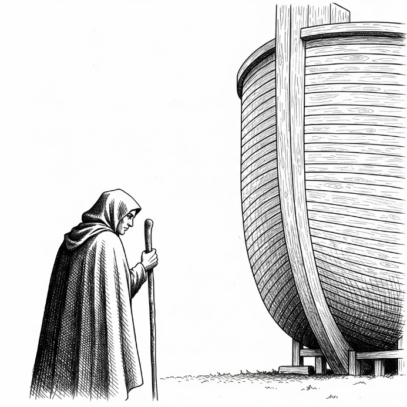
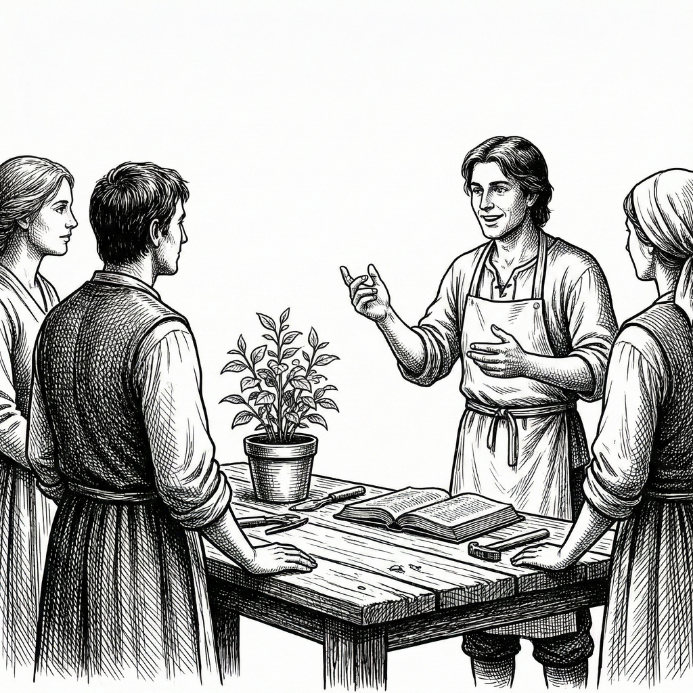
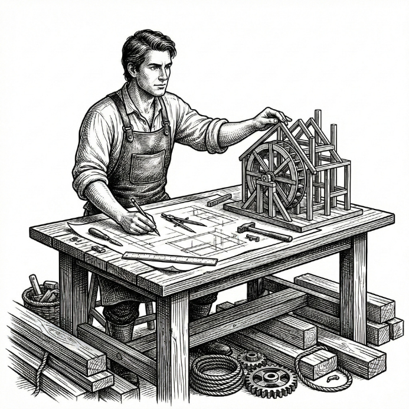
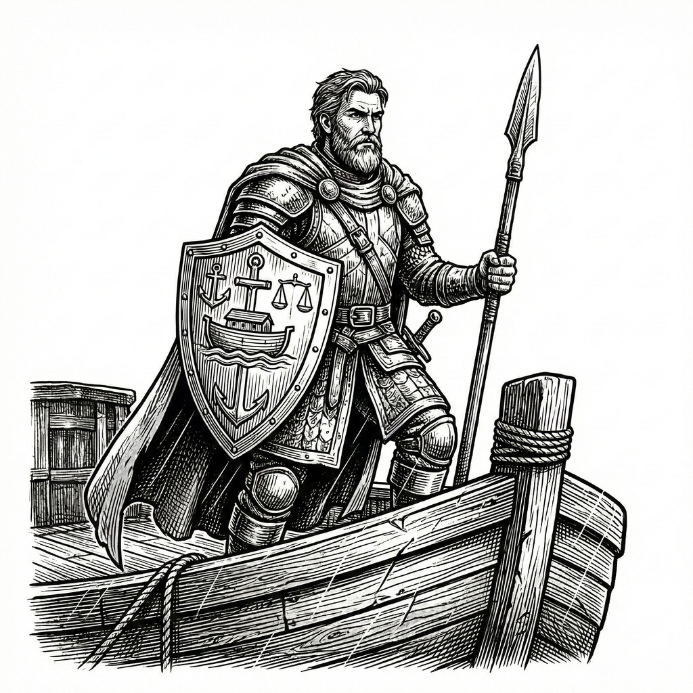

Roles & Voyages
役割と航海
世界が揺らぐ中で
ただ乗り込む者、
船を動かす者、
守る者、
次の世界を託される者。
※各役割は「上級会員」という概念ではなく、“覚悟のある人”にしか名乗れない名前として定義されています。

ARRIVAL
たどり着いた人「この箱舟に、たどり着いた。」
まだ役割は持たないが、世界の一部になっている。
箱舟の存在を知り、この航海に身を委ねることを選んだ人。
- 「軽さ」ではなく“選択した人”という尊厳

SETTLER
暮らす人「ここで暮らすことを選んだ。」
ただの乗客から一歩進んだ存在。
箱舟の中でただ生き延びるだけでなく、生活を営み始めた人。
- コミュニティに発言する
- 場の空気をつくる
- 文化の芽になる

BUILDER
創る人「未来を創る側に回った。」
仕組み・文化・プロジェクトを生む側。
航海のあいだ、次の世界に何を持ち込むかを形にし始めた人。

GUARDIAN
守る人「共同体を守る責任を引き受けた。」
判断・秩序・倫理に関与する立場。
嵐の中でも箱舟が進み続けるよう見張り、支え、守る人。
特別枠

COVENANT
託される人ノアと神が結んだ「契約」から
「世界を託された。」
この航海が終わったあと、どんな世界を残すか。その責任を引き受けた人。
中核メンバーとして意思決定に関与し、世界観・方針を保持します。
- 中核メンバーとしての参画
- コミュニティの意思決定に関与
- 世界観・方針の保持者としての権利